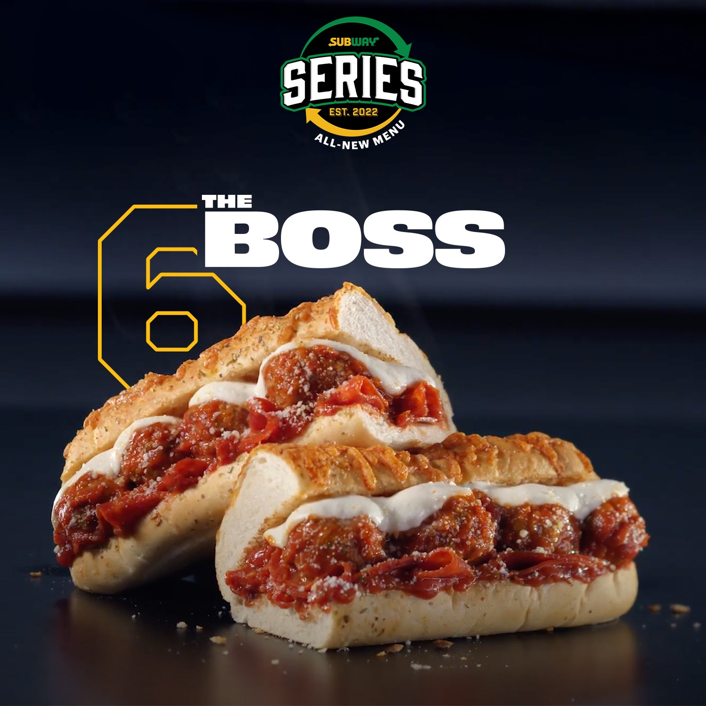
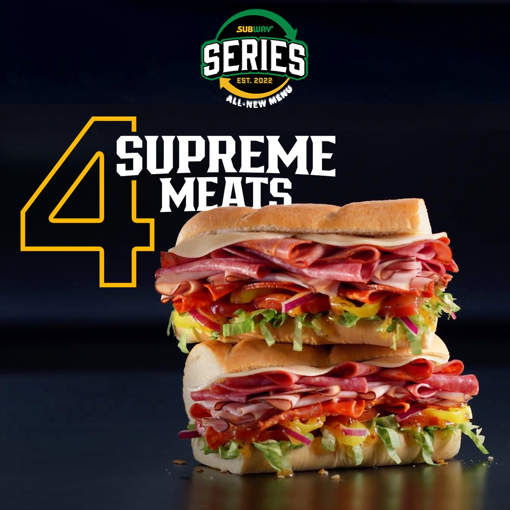
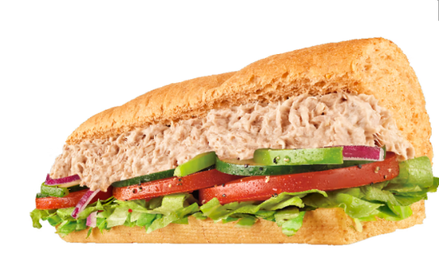

From last meeting:
Recommendation from friend -- the beef and cheese sandwhich.
Should buy a foot long to cover meals for one whole day.
Continue to this meeting:
1. No chicken or turkey please.
2. Want something high in calories.
3. Want something with a lot of meat.
The boss: pros -- meatloaf looks great; cons -- haven't tried it before.
Supremes meats: pros -- love the ham, very high in calories; cons -- haven't tried it before, hate cold lunch.
Tuna sandwhich: pros -- safe choice, love tuna; cons -- low calories
Q: Will the footlong sandwhich be enough for two meals? Should we buy two footlong instead?
A: No, it will be too much. I have snacks with me.
Q: Will it fall apart during the hike?
A: We will just have to finish it before the hike then.
Always choose the bread that has higher calories but are not hard to choose.
Prefer soft bread that are not sour or too salty.
Chooses the first bread (just for experience) since I know nothing about bread.
Result: Toasted Artisan Italian
Extra: Lettuce, tomatoes, Cucumbers
Normal: Red Onions, Spinach, Pickles, Green Pepper
NO: Black olives, Jalapenos, Banana Peppers
Try: FTL899 (doesn't work)
FOOTLONG899 (works yay)